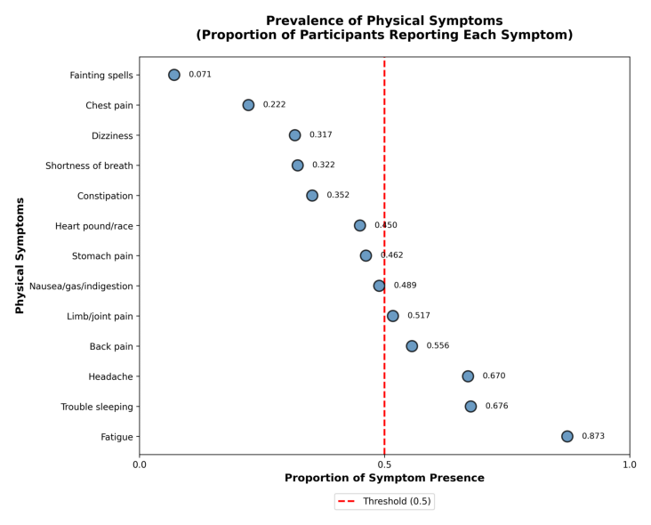
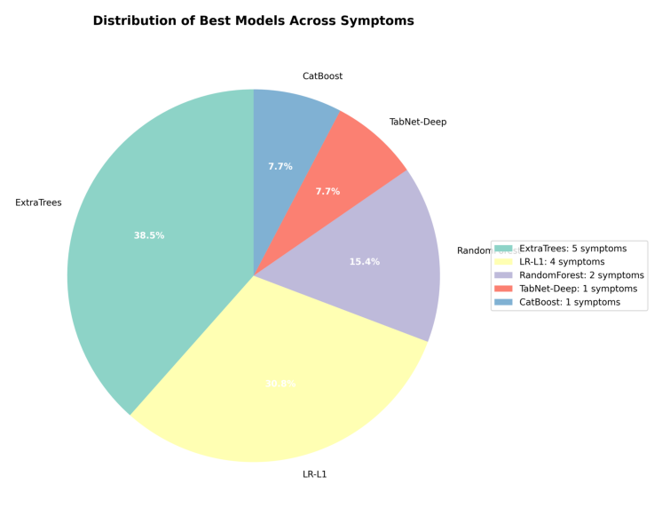
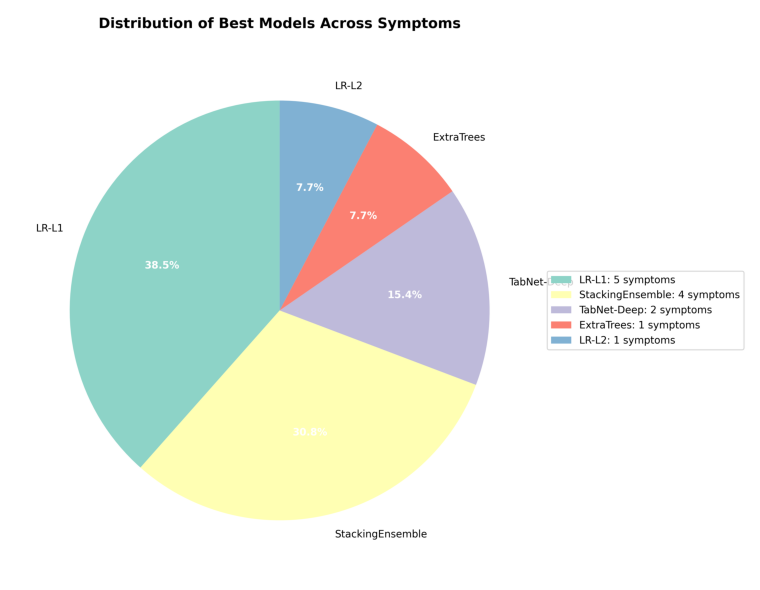
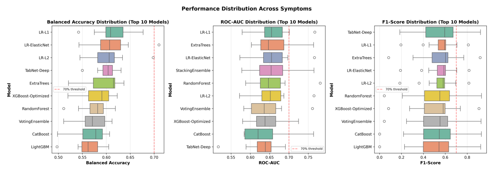
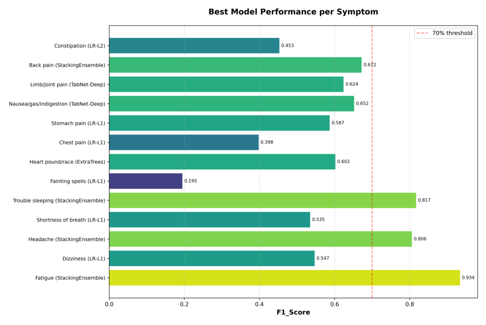
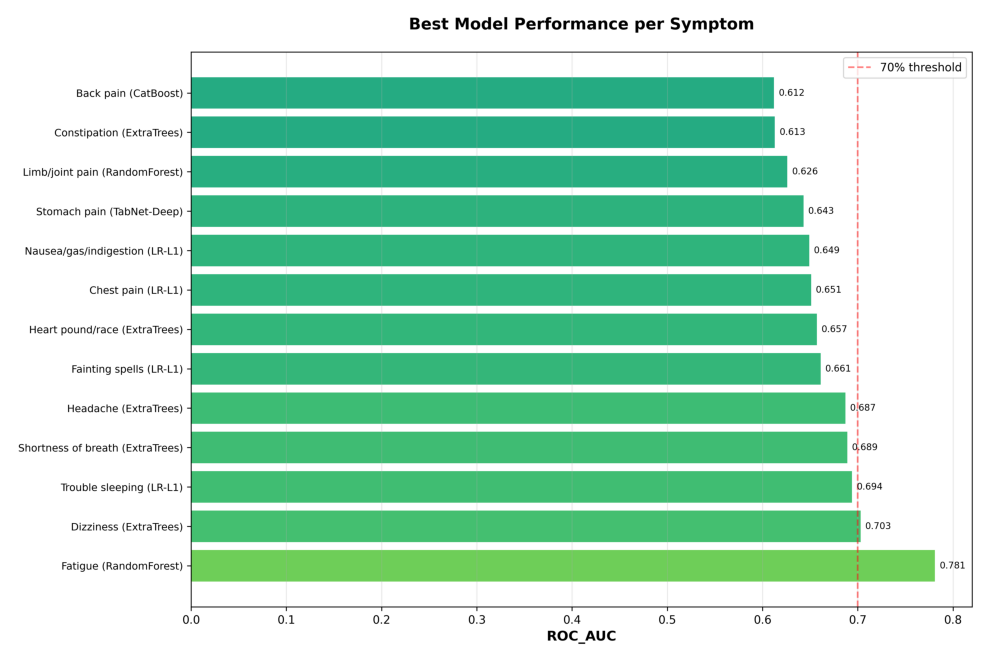
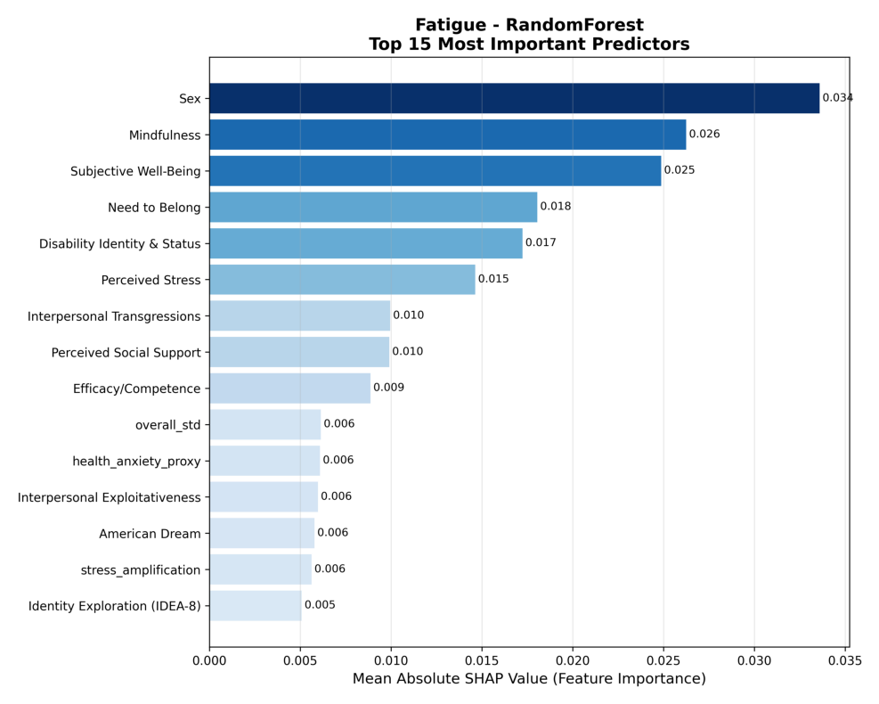
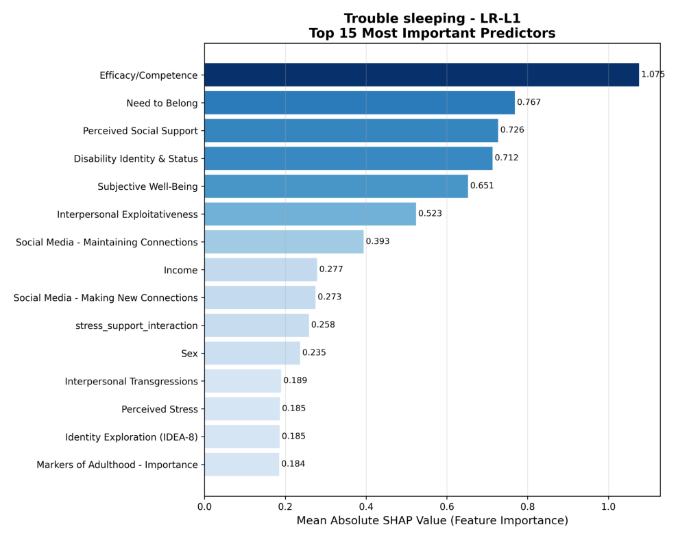
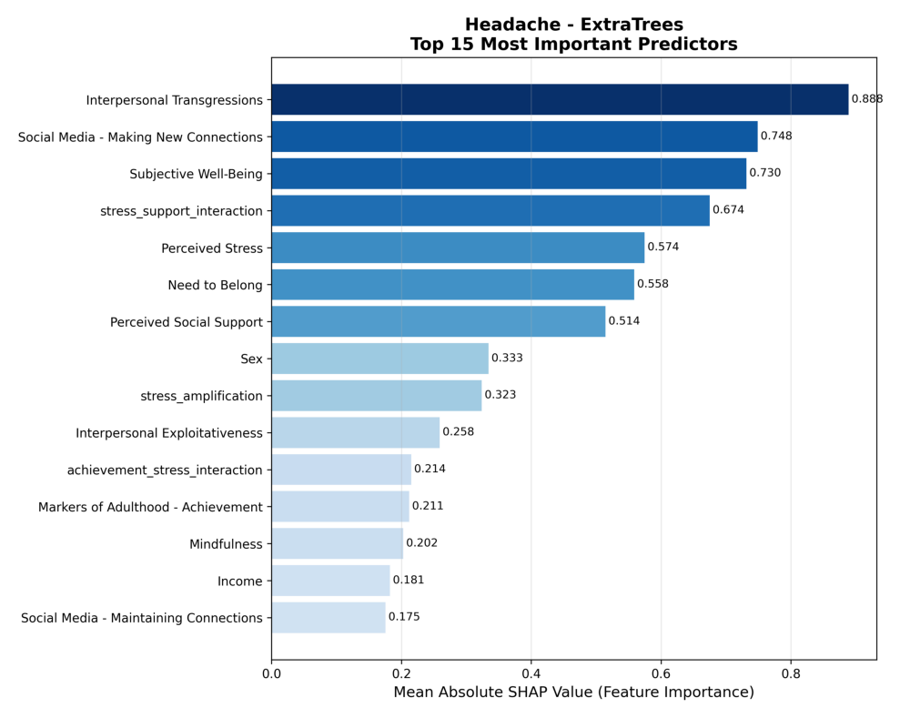
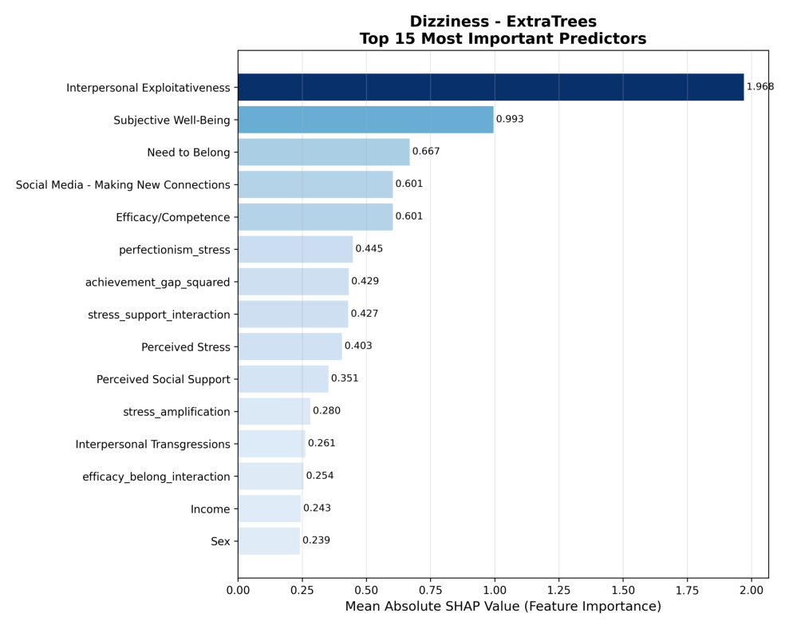

Collecting pingouin
Downloading pingouin-0.5.5-py3-none-any.whl.metadata (19 kB)
Requirement already satisfied: matplotlib in /usr/local/lib/python3.12/dist-packages (from pingouin) (3.10.0)
Requirement already satisfied: numpy in /usr/local/lib/python3.12/dist-packages (from pingouin) (2.0.2)
Requirement already satisfied: pandas>=1.5 in /usr/local/lib/python3.12/dist-packages (from pingouin) (2.2.2)
Collecting pandas-flavor (from pingouin)
Downloading pandas_flavor-0.8.1-py3-none-any.whl.metadata (6.6 kB)
Requirement already satisfied: scikit-learn>=1.2 in /usr/local/lib/python3.12/dist-packages (from pingouin) (1.6.1)
Requirement already satisfied: scipy in /usr/local/lib/python3.12/dist-packages (from pingouin) (1.16.3)
Requirement already satisfied: seaborn in /usr/local/lib/python3.12/dist-packages (from pingouin) (0.13.2)
Requirement already satisfied: statsmodels in /usr/local/lib/python3.12/dist-packages (from pingouin) (0.14.5)
Requirement already satisfied: tabulate in /usr/local/lib/python3.12/dist-packages (from pingouin) (0.9.0)
Requirement already satisfied: python-dateutil>=2.8.2 in /usr/local/lib/python3.12/dist-packages (from pandas>=1.5->pingouin) (2.9.0.post0)
Requirement already satisfied: pytz>=2020.1 in /usr/local/lib/python3.12/dist-packages (from pandas>=1.5->pingouin) (2025.2)
Requirement already satisfied: tzdata>=2022.7 in /usr/local/lib/python3.12/dist-packages (from pandas>=1.5->pingouin) (2025.2)
Requirement already satisfied: joblib>=1.2.0 in /usr/local/lib/python3.12/dist-packages (from scikit-learn>=1.2->pingouin) (1.5.2)
Requirement already satisfied: threadpoolctl>=3.1.0 in /usr/local/lib/python3.12/dist-packages (from scikit-learn>=1.2->pingouin) (3.6.0)
Requirement already satisfied: contourpy>=1.0.1 in /usr/local/lib/python3.12/dist-packages (from matplotlib->pingouin) (1.3.3)
Requirement already satisfied: cycler>=0.10 in /usr/local/lib/python3.12/dist-packages (from matplotlib->pingouin) (0.12.1)
Requirement already satisfied: fonttools>=4.22.0 in /usr/local/lib/python3.12/dist-packages (from matplotlib->pingouin) (4.60.1)
Requirement already satisfied: kiwisolver>=1.3.1 in /usr/local/lib/python3.12/dist-packages (from matplotlib->pingouin) (1.4.9)
Requirement already satisfied: packaging>=20.0 in /usr/local/lib/python3.12/dist-packages (from matplotlib->pingouin) (25.0)
Requirement already satisfied: pillow>=8 in /usr/local/lib/python3.12/dist-packages (from matplotlib->pingouin) (11.3.0)
Requirement already satisfied: pyparsing>=2.3.1 in /usr/local/lib/python3.12/dist-packages (from matplotlib->pingouin) (3.2.5)
Requirement already satisfied: xarray in /usr/local/lib/python3.12/dist-packages (from pandas-flavor->pingouin) (2025.11.0)
Requirement already satisfied: patsy>=0.5.6 in /usr/local/lib/python3.12/dist-packages (from statsmodels->pingouin) (1.0.2)
Requirement already satisfied: six>=1.5 in /usr/local/lib/python3.12/dist-packages (from python-dateutil>=2.8.2->pandas>=1.5->pingouin) (1.17.0)
Downloading pingouin-0.5.5-py3-none-any.whl (204 kB)
━━━━━━━━━━━━━━━━━━━━━━━━━━━━━━━━━━━━━━━━ 204.4/204.4 kB 5.1 MB/s eta 0:00:00
Downloading pandas_flavor-0.8.1-py3-none-any.whl (8.5 kB)
Installing collected packages: pandas-flavor, pingouin
Successfully installed pandas-flavor-0.8.1 pingouin-0.5.5Pain, Disability, and Depression in Chronic Pain Patients: Investigating Direct and Interactive Effects on Depressive Symptom Severity
Abstract
Somatic symptoms are heterogeneous in their psychological and physiological origins, yet they are often measured using the PHQ-15 total score, which assumes a single underlying cause. The present study applied machine learning to predict 13 individual PHQ-15 symptoms in young adults using psychological and demographic predictors. Using multiple algorithms, including logistic regression, K-nearest neighbors, boosting models, random forest, ExtraTrees, and a TabNet neural network, we evaluated symptom-specific discriminability with balanced accuracy and ROC–AUC, F1 score due to class imbalance. Fatigue and sleep problems showed the strongest discriminability across models as they both have high F1 and Roc-auc scores, indicating meaningful variability in predictability across symptoms. SHAP analyses demonstrated distinct predictor profiles for different symptoms, with factors such as stress, mindfulness, subjective well-being, and interpersonal tendencies emerging as influential. Findings highlight the importance of modeling somatic symptoms at the item level rather than relying on total PHQ-15 scores and suggest potential avenues for more personalized assessment and intervention.
1 Introduction
Background: What are Somatic Symptoms and PHQ-15?
Somatic symptoms such as fatigue, dizziness, chest pain, and gastrointestinal discomfort are common physical complaints that often lack a clear biomedical explanation. These symptoms are frequently linked to psychological distress and are observed across both clinical and community settings. They are also a major reason why individuals seek medical care, yet their presence can complicate diagnosis and treatment, particularly when clinicians focus solely on physical causes. Recent work highlights the importance of early identification of persistent somatic symptoms in primary care. Approximately 10% of adults experience symptoms that are not fully explained by a medical condition, and up to half of primary care consultations involve complaints lacking a clear biomedical basis (Kitselaar et al., 2023). Although many symptoms resolve spontaneously, others become chronic and burdensome, leading to increased healthcare use and higher rates of anxiety and depression.
The Diagnostic and Statistical Manual of Mental Disorders (5th ed.) reconceptualized these presentations under somatic symptom and related disorders, shifting emphasis from the absence of a medical explanation to the presence of maladaptive thoughts, feelings, and behaviors surrounding symptoms (Kurlansik & Maffei, 2016). This reframing better reflects how patients experience their symptoms and reduces stigma associated with medically unexplained complaints. Research shows that individuals with somatic symptom disorder often display heightened bodily awareness and may interpret benign sensations as signs of serious illness, particularly under stress. Risk factors for persistent somatic symptoms include childhood adversity, substance use, and comorbid mental health problems (Kurlansik & Maffei, 2016).
Somatic symptoms are also closely intertwined with depression. In a large international primary care study, 69% of patients with major depression presented exclusively with somatic complaints—such as pain or fatigue—rather than emotional symptoms (Simon et al., 1999). This pattern was especially common among individuals without an established relationship with a physician, suggesting that cultural and healthcare system factors shape the ways psychological distress is communicated. For many patients, somatic symptoms function as a more socially acceptable form of help-seeking.
Although the PHQ-15 is one of the most widely used measures of somatic symptom burden, its standard scoring assumes that all 15 symptoms arise from a single underlying construct. However, converging evidence indicates that individual symptoms differ substantially in their psychological, behavioral, and physiological origins. Treating symptoms as interchangeable risks masking meaningful variation and may obscure whether a complaint reflects psychological distress, a medical condition, or both. This limitation underscores the need for symptom-level analyses rather than relying solely on PHQ-15 total scores.
Building on this foundation, prior research has identified multiple predictors of somatic symptoms. In a large population-based study, somatic complaints were significantly predicted by stressful life events, chronic illnesses, and psychological traits such as anxiety and neuroticism, with physical health factors accounting for more variance than mental disorders alone (Creed, 2022). Symptom count itself has also been shown to predict poor health outcomes and increased healthcare use more reliably than diagnostic categories (Tomenson et al., 2013). In clinical contexts such as cardiac care, persistent somatic symptoms are jointly shaped by medical and psychosocial factors, including gender, age, depressive symptoms, anxiety, and disease severity (Clifford et al., 2024). Research from the SOMACROSS consortium further identifies perceived stress as a modifiable risk factor for persistent somatic symptoms, particularly when stress is experienced as uncontrollable (Löwe et al., 2022).
Together, these findings underscore the importance of examining somatic symptoms individually and identifying their psychological, demographic, and social predictors. The present study builds on this framework by applying logistic regression and machine learning models to analyze the predictors of symptom experiences among young adults in the EAMMi2 dataset (Grahe, Chalk, Cramblet Alvarez, et al., 2018). By analyzing each PHQ-15 symptom as a separate outcome, this work aims to uncover symptom-specific pathways that may be obscured when relying only on total PHQ-15 score.
2 Literature Review
2.1 Somatic Symptom
2.1.1 Symptom 1: Stomach Pain
Stomach pain is a common somatic complaint that frequently co-occurs with emotional distress across development. Population research in youth shows disorder-specific links between stomach aches and psychopathology, including associations with anxiety in girls and with oppositional defiant disorder and attention-deficit/hyperactivity disorder in boys (Egger et al., 1999). Pediatric studies of recurrent or functional abdominal pain similarly report elevated anxiety and depression relative to peers, highlighting a bidirectional gut–brain pathway of risk (Ayonrinde et al., 2020; Dufton et al., 2009). Among adults, abdominal pain within irritable bowel syndrome shows strong comorbidity with anxiety and depression, with meta-analytic evidence estimating approximately threefold greater odds of anxiety and prevalences around 39% for anxiety and 29% for depression (Zamani et al., 2019). Together, these findings position stomach pain as a salient marker of co-occurring psychological distress and reinforce the need to assess anxiety and depression when abdominal pain is persistent or impairing.
2.1.2 Symptom 2: Back Pain
Back pain is a highly prevalent somatic symptom that often co-occurs with psychological distress. Meta-analytic and longitudinal studies link chronic low back pain with higher levels of depressive symptoms, functional disability, and poorer recovery trajectories, suggesting bidirectional interplay between mood and pain (Wong et al., 2022). At the same time, contemporary guidelines emphasize that back pain is heterogeneous and frequently non-specific, arising from interacting biological, lifestyle, and occupational factors, including physical load, degenerative changes, high body mass index, and work-related exposures (Ferreira et al., 2023). Accordingly, back pain is best conceptualized within a biopsychosocial framework that integrates psychological, social, and biological contributors rather than attributing symptoms solely to emotional distress (Foster et al., 2018).
2.1.3 Symptom 3: Pain in Arms, Legs, or Joints
Musculoskeletal pain in the arms, legs, or joints is widely reported and often linked to psychological distress. Adult population studies associate musculoskeletal pain with higher rates of anxiety and depression, and similar patterns appear in youth, where musculoskeletal symptoms predict internalizing problems and later mental health service use (Eckhoff et al., 2017; Egger et al., 1999; Jennifer et al., 2024). At the same time, limb and joint pain emerges from diverse physiological pathways, including osteoarthritis, inflammatory or degenerative joint disease, prior injury, overuse, age, obesity, and sex differences, and global burden estimates show rising prevalence driven by demographic and lifestyle shifts (Steinmetz et al., 2023). Thus, joint and limb pain requires a biopsychosocial lens that screens for anxiety and depression while also evaluating mechanical and inflammatory contributors.
2.1.4 Symptom 4: Headache
Headache frequently co-occurs with emotional distress across the lifespan. In youth, population data show that headaches are associated with internalizing problems, with some variation by sex and headache type (Egger et al., 1999). In adults, both migraine and tension-type headaches show robust associations with anxiety and depression, and bidirectional longitudinal relationships have been documented between migraine and depressive symptoms (Giri et al., 2022). At the same time, headaches arise from heterogeneous mechanisms; the International Classification of Headache Disorders distinguishes between primary headache disorders and secondary headaches due to identifiable medical causes, emphasizing the need for biomedical evaluation alongside psychosocial assessment (International Headache Society, 2018).
2.1.5 Symptom 5: Chest Pain
Chest pain is a common presenting complaint with strong psychological and biomedical dimensions. Patients with noncardiac chest pain show significantly elevated rates of panic disorder, major depression, and generalized anxiety, and psychological distress is associated with poorer quality of life and increased healthcare use (Gonzalez-Ibarra et al., 2024). Meta-analytic and longitudinal research further ties chest pain presentations to heightened risk of panic disorder (Huffman et al., 2002). However, chest pain is etiologically diverse, requiring structured evaluation to exclude cardiac, pulmonary, gastrointestinal, and musculoskeletal causes (Gulati et al., 2021). Thus, although psychological screening is important when cardiac causes are excluded, chest pain demands a broad biomedical differential diagnosis.
2.1.6 Symptom 6: Dizziness
Dizziness is prevalent in both primary care and general population samples and often co-occurs with anxiety and depressive symptoms (Kerber et al., 2017). Persistent postural-perceptual dizziness provides a clear illustration: onset is frequently triggered by an acute vestibular insult but is maintained by hypervigilance, avoidance, and anxiety, resulting in substantial functional impairment (Staab et al., 2017). Comorbid anxiety or depression predicts greater vertigo severity and poorer functioning (Feng & Zang, 2023). Yet dizziness also arises from diverse biomedical etiologies—including benign paroxysmal positional vertigo, vestibular neuritis, orthostatic intolerance, neurologic disease, and cardiovascular abnormalities—requiring combined psychosocial assessment and structured differential diagnosis (Zwergal et al., 2023).
2.1.7 Symptom 7: Fainting Spells (Syncope)
Fainting, medically referred to as syncope, describes a transient loss of consciousness with rapid, spontaneous recovery following a drop in cerebral blood flow (Grossman & Badireddy, 2025). The most common form is vasovagal syncope (also known as reflex or neurocardiogenic syncope), which may be triggered by physical or emotional stressors such as standing for long periods, dehydration, sudden postural changes, pain, or strong emotional stimuli (e.g., seeing blood) (Johns Hopkins Medicine, n.d.). Situational triggers beyond posture are also recognized: syncope can result from coughing, urination (post-micturition syncope), gastrointestinal exertion (straining), or other reflex-mediated events (Grossman & Badireddy, 2025). Psychological factors, however, play a meaningful role in vasovagal syncope: anxiety, health-related worry, and depressive symptoms are common and contribute to episode frequency, avoidance behaviors, and reduced quality of life (Gracie et al., 2004).
2.1.8 Symptom 8: Heart Palpitations
Heart palpitations are common across clinical settings and are influenced by both physiologic and psychosocial factors. Recent evidence from coronary heart disease populations indicates that gendered psychosocial risk profiles, shaped by personality traits, coping styles, and demographic factors, play a significant role in symptom experience and reporting (Houdt et al., 2024). These findings highlight that palpitations can reflect a blend of autonomic, cardiovascular, and psychological processes.
2.1.9 Symptom 9: Shortness of Breath
Shortness of breath is strongly associated with identifiable biomedical conditions, particularly in emergency settings. Among adults aged 18–44, acute asthma exacerbation is the most common cause, whereas obstructive chronic bronchitis and heart failure dominate in older age groups (Hale et al., 2018). Biomarker studies show that BNP and MR-proANP have high diagnostic accuracy for acute destabilized heart failure, surpassing other physiological markers (Dieplinger et al., 2009). These findings underscore the importance of distinguishing physiologic from psychological contributors when evaluating dyspnea, given its potential to signal serious cardiac pathology.
2.1.10 Symptom 10: Constipation, Loose Bowels, or Diarrhea
Gastrointestinal symptoms show meaningful psychological components, particularly in irritable bowel syndrome (IBS). In a study of more than 500 patients with refractory IBS, avoidance behaviors and maladaptive gastrointestinal cognitions were associated with loose/watery stools, whereas control-oriented behaviors were associated with hard/lumpy stools—patterns that persisted even after adjusting for anxiety, depression, and symptom severity (Windgassen et al., 2017). These findings highlight distinct cognitive-behavioral profiles across IBS subtypes and illustrate the potential for targeted psychological interventions.
2.1.11 Symptom 11: Nausea, Gas, or Indigestion
Nausea and related digestive symptoms arise from diverse physiological pathways, including diabetic gastroparesis, postoperative effects, cancer treatments, pregnancy, and motion-related triggers (Stern et al., 2011). The mechanisms underlying nausea reflect complex gut–brain and autonomic interactions, and in some contexts (e.g., early pregnancy), nausea may serve an adaptive function. Although psychological factors may influence symptom perception, many causes are biomedical, emphasizing the need for integrated assessment.
2.1.12 Symptom 12: Fatigue
Fatigue is a multidimensional symptom highly associated with functional impairment and healthcare use. Large population-based studies identify stressful life events, chronic medical conditions, anxiety, and neuroticism as significant predictors, with physical health variables explaining more variance than mental disorders alone (Creed, 2022). Clinical findings show that fatigue severity is shaped by gender, age, comorbid depression and anxiety, disease burden, and perceived stress—suggesting overlapping biological, psychological, and social determinants (Clifford et al., 2024; Löwe et al., 2022; Tomenson et al., 2013). These patterns position fatigue as a key persistent somatic symptom requiring biopsychosocial evaluation.
2.1.13 Symptom 13: Trouble Sleeping
Sleep problems are highly prevalent and influenced by psychological, medical, and lifestyle factors. In a sample of 1,925 women over age 50 with chronic health conditions, 43% reported concurrent sleep problems; financial strain significantly increased risk, whereas higher physical activity served as a protective factor (Meredith et al., 2019). These findings highlight the interplay between economic stress, behavioral factors, and sleep-related somatic complaints.
3 Method
3.1 Dataset
The present study uses the Emerging Adulthood Measured at Multiple Institutions 2 (EAMMi2) dataset, a publicly available multi-site survey of college students and young adults in the United States. Data were collected between 2016 and 2017 across 32 academic institutions. A total of 4,220 participants began the survey, and 3,134 remained after the application of predefined cleaning procedures that removed incomplete responses, failed attention checks, and unrealistically fast completion times. Participants were primarily emerging adults, with a mean age of approximately 21 years. The gender distribution included 72.8 percent women and 24.6 percent men, with a small proportion identifying otherwise. The sample was racially and ethnically diverse. The largest racial group identified as White or European American (63.5 percent), followed by Asian or Pacific Islander (6.5 percent), Black or African American (7.6 percent), Hispanic or Latino or Latina (8.7 percent), Native American (0.4 percent), and smaller percentages reporting mixed or other identities. The dataset includes a broad range of psychosocial, demographic, and health-related measures. For the purposes of this project, we use the PHQ-15 somatic symptom items along with a selection of relevant psychological and demographic variables.
3.2 Material
Study materials were drawn from the original public EAMMi2 dataset (Grahe, Chalk, Alvarez, et al., 2018).
3.2.1 Outcome Variable
The outcome variable was assessed using item 13 from the Patient Health Questionnaire (PHQ) (Kroenke et al., 2010). Responses were recoded into a binary variable, where a score of 2 or higher was considered symptomatic (coded as 1), and a score of 1 indicated no significant fatigue symptoms (coded as 0). This binary formulation was chosen due to its moderate class balance and clinical relevance.
3.2.2 Psychological Predictors
All psychological variables were computed as mean scores across item-level responses, provided that a sufficient proportion of items (≥70%) were present. The following scales were included:
- IDEA-8: Identity exploration and development (8 items) (Baggio et al., 2015)
- Markers of Adulthood:
- Achievement subscale (10 items) (Arnett, 1997, 2001)
- Importance subscale (10 items) (Arnett, 1997, 2001)
- Perceived Stress Scale (10 items) (Cohen et al., 1983)
- Perceived Social Support (12 items) (Zimet et al., 1988)
- Need to Belong Scale (10 items) (Leary et al., 2013)
- Mindfulness Scale (15 items) (Brown & Ryan, 2003)
- Self-Efficacy/Competence (10 items) (Bolton & Brookings, 1998; Schwarzer & Jerusalem, 1995)
- Narcissistic Personality Inventory (NPI-13) (13 items) (Gentile et al., 2013)
- Interpersonal Exploitativeness (3 items) (Brunell et al., 2013)
- Disability Identity and Status (combination of 22 items from Q10, Q11, and Q14) (Grahe, Biehle, et al., 2018)
- Social Media Use:
- Maintaining connections (5 items) (Yang & Brown, 2013, 2015)
- Making new connections (4 items) (Yang & Brown, 2013, 2015)
- Seeking information (2 items) (Yang & Brown, 2013, 2015)
- Subjective Well-Being (6 items) (Diener, 2000)
- Interpersonal Transgressions (4 items) (McCullough et al., 2003)
- Belief in and importance of the American Dream (2 items) (Grahe, Biehle, et al., 2018)
3.2.3 Demographic and Attitudinal Predictors
- Sex (male, female, other; categorical)
- Education level
- Race/Ethnicity
- Household income
- School attended
- Parental marriage status (recoded into categorical dummy variables)
- Siblings (recoded: -0.5 = no siblings, 0.5 = at least one sibling)
- Importance of marriage (single-item rating)
3.3 Sample
Cloning into 'somatic-symptom'...
remote: Enumerating objects: 366, done.
remote: Counting objects: 100% (115/115), done.
remote: Compressing objects: 100% (78/78), done.
remote: Total 366 (delta 46), reused 101 (delta 37), pack-reused 251 (from 1)
Receiving objects: 100% (366/366), 47.53 MiB | 14.69 MiB/s, done.
Resolving deltas: 100% (124/124), done.As shown in Table 1, 73.4% of participants are female, and the Table 2 shows that 63.7% of the participants are white.
| Count | Percentage (%) | |
|---|---|---|
| sex | ||
| Female | 2332 | 73.379484 |
| Male | 792 | 24.921334 |
| Other | 54 | 1.699182 |
| Count | Percentage (%) | |
|---|---|---|
| race/ethnicity | ||
| White | 2026 | 63.670647 |
| Other | 399 | 12.539283 |
| Hispanic | 286 | 8.988058 |
| Black | 249 | 7.825267 |
| Asian | 210 | 6.599623 |
| Native American | 12 | 0.377121 |
3.4 Model
Logistic regression (GLMnet)
Logistic regression models the log odds of a binary outcome as a linear function of predictor variables. In this project, we used the GLMnet implementation, which adds regularization so that the model can handle many correlated predictors and reduce overfitting. The penalty term shrinks less important coefficients toward zero, which can improve generalization and highlight the most influential predictors. Logistic regression is also relatively easy to interpret, which makes it useful when we want to link model results back to psychological theory.
K nearest neighbors (KNN)
K nearest neighbors is a simple non parametric classifier that makes predictions based on similarity in the feature space. For each new case, the algorithm finds the K most similar training cases and assigns the majority class among them. KNN can capture nonlinear decision boundaries because it relies on local neighborhoods rather than a fixed global formula. Its performance depends on the choice of K, the distance metric, and good preprocessing such as scaling.
XGBoost
XGBoost is a gradient boosting method that builds an ensemble of decision trees in a stagewise way. Each new tree is trained to correct the errors of the previous trees, which allows the model to capture complex nonlinear relationships and interactions. XGBoost includes strong regularization, learning rate control, and handling of missing values, which often leads to high predictive performance on structured data. In our context, it is useful for modeling subtle patterns that link psychosocial predictors to somatic symptoms.
CatBoost
CatBoost is another gradient boosting method that is designed to handle categorical features efficiently. It uses ordered statistics and special encoding schemes to reduce target leakage and overfitting when converting categories to numerical representations. Like other boosting algorithms, it builds many trees sequentially, with each tree focusing on the remaining errors. CatBoost is often robust with minimal tuning and can perform well when the data include many discrete or ordinal variables, which is common in psychological questionnaires.
Light Gradient Boosting (LightGBM)
Light Gradient Boosting, or LightGBM, is a gradient boosting framework that focuses on speed and efficiency. It uses histogram based algorithms and a leaf wise tree growth strategy, which allows it to train faster and handle larger datasets with many features. LightGBM can model complex relationships and interactions while keeping memory usage relatively low. In our analysis, it offers a flexible and scalable option for predicting somatic symptoms from a wide set of psychosocial predictors.
Random forest
Random forest is an ensemble of decision trees that reduces overfitting by using randomness in both data and features. Each tree is trained on a bootstrap sample of the data, and at each split the algorithm considers only a random subset of predictors. The final prediction is made by aggregating the votes of all trees. This approach tends to be stable and robust and can capture nonlinear effects and interactions without strong parametric assumptions.
ExtraTrees (Extremely Randomized Trees)
ExtraTrees is similar to random forest but introduces even more randomness during tree construction. Instead of searching for the best split for each node, it selects split thresholds at random and then chooses the best among those random candidates. This extra randomness can reduce variance and speed up training, especially when there are many features. In practice, ExtraTrees often performs competitively with random forest while being faster and sometimes less prone to overfitting on noisy data.
Voting ensemble
A voting ensemble combines the predictions of several different models in order to improve overall performance. Each base model is trained on the same data, and their predictions are combined, for example by majority vote for classification or by averaging predicted probabilities. The idea is that different models may capture different aspects of the data, and their errors may cancel out when combined. In our project, the voting ensemble allows us to integrate strengths from multiple algorithms when predicting each somatic symptom.
Neural network (TabNet deep)
The TabNet deep model is a neural network architecture that is designed for tabular data. It uses sequential attention and feature selection steps so that the network can focus on the most important features at each decision stage. This structure allows the model to learn complex nonlinear relationships while still providing some interpretability through feature masks and importance scores. For our study, TabNet offers a flexible deep learning approach that can complement tree based methods in modeling the links between psychosocial variables and somatic symptoms.
4 Procedure
4.1 Preprocessing Pipeline
All data preparation procedures were conducted prior to model building. Miao performed the initial preprocessing and organization of the analytic dataset, and Jessica implemented the feature-engineering procedures and scale reliability checks. ### Outcome Coding Each of the thirteen PHQ-15 symptoms was converted into a binary variable. Responses of “not bothered at all” were coded as 0, and responses indicating any degree of symptom presence (“bothered a little” or “bothered a lot”) were coded as 1. This created thirteen symptom-specific binary outcomes for prediction. ### Psychological Scale Scoring Miao computed composite psychological predictors by averaging item-level responses for each multi-item scale, following the scoring guidance provided in the dataset documentation. These scales included perceived stress, perceived social support, need to belong, mindfulness, subjective well-being, self-efficacy, IDEA-8 identity exploration, Markers of Adulthood, disability identity, social media subscales, interpersonal exploitativeness, interpersonal transgressions, narcissistic traits, and American Dream beliefs.
4.2 Cronbach’s Alpha
Jessica computed Cronbach’s alpha (see Table 3) for each multi-item scale as a sanity check to ensure that the composite scores showed adequate internal consistency and were suitable for further analysis. Most scales fell in the acceptable to very reliable range. Markers of Adulthood – Importance, Markers of Adulthood – Achievement, IDEA-8, Mindfulness, Social Media Use, and American Dream all showed acceptable reliability (α ≈ .73–.78), while Subjective Well-Being, Interpersonal Transgressions, Physical Symptoms, and Interpersonal Exploitativeness showed very high reliability (α ≈ .83–.91), with the latter two alphas suggesting that items may be somewhat redundant and could potentially be streamlined in future work. In contrast, Need to Belong, Perceived Stress, NPI-13, and Marriage Opinions had alphas below .70, indicating more questionable internal consistency; we retained these scales due to their theoretical importance but interpret their results with greater caution. Overall, this reliability check supports the use of most composite scores and flags a few scales for more cautious interpretation or possible refinement in later studies.
| Scale_Name | Cronbach_Alpha | |
|---|---|---|
| 0 | Markers of Adulthood - Importance | 0.762 |
| 1 | Markers of Adulthood - Achievement | 0.757 |
| 2 | Identity Exploration (IDEA-8) | 0.737 |
| 3 | Subjective Well-Being | 0.905 |
| 4 | Mindfulness | 0.765 |
| 5 | Need to Belong | 0.690 |
| 6 | Efficacy/Competence | 0.783 |
| 7 | Perceived Social Support | 0.783 |
| 8 | Social Media Use | 0.756 |
| 9 | American Dream | 0.773 |
| 10 | Interpersonal Transgressions | 0.865 |
| 11 | Narcissistic Personality Inventory (NPI-13) | 0.535 |
| 12 | Perceived Stress | 0.686 |
| 13 | Marriage Opinions | 0.563 |
| 14 | Physical Symptoms | 0.831 |
| 15 | Interpersonal Exploitativeness | 0.910 |
4.3 Feature Engineering
Jessica led the feature-engineering pipeline used for model training. She first aggregated item-level responses into scale scores for each psychological construct (e.g., stress, social support, mindfulness, need to belong, efficacy, IDEA-8, Markers of Adulthood, social media subscales, disability identity, subjective well-being, interpersonal transgressions). For each scale, she computed the mean, within-person standard deviation, maximum, and minimum, allowing models to capture both central tendency and variability. Building on these composites, Jessica implemented a multi-level feature scheme. At lower levels, she added theory-driven interactions (e.g., stress × low support, stress × low mindfulness, efficacy × stress, stress/support ratios) and broader indices such as psychological distress and protective factors, plus their balance via risk–protection ratios. Higher levels incorporated domain-informed proxies from the somatization and health literature (e.g., emotional awareness deficits, catastrophizing, social isolation, rumination, health anxiety), as well as stress around adult role attainment using importance–achievement gaps on Markers of Adulthood and their non-linear forms. She also applied non-linear transformations (squared, log, square-root) to key scales, summarized overall psychological profiles (mean, SD, skewness, kurtosis across scales), and created a somatization proneness index combining high stress with low support, mindfulness, well-being, and efficacy. Finally, she introduced selected interactions between demographics and key predictors (e.g., sex × stress, income × stress), and then pruned to a set of interpretable engineered variables plus key demographic indicators. In total, Jessica’s feature-engineering pipeline produced 166 predictors used to train and interpret the machine learning models.
4.3.1 Demographic Predictors
Demographic predictors included sex, race and ethnicity, education level, parental marital status, household income, and a centered sibling indicator. Parental marital status was dummy-coded, and other categorical variables were encoded using one-hot procedures during preprocessing. ### Missing Data Handling For each symptom, missing data were addressed using complete-case selection. A separate analytic dataset was created for each of the thirteen symptoms, and cases with missing values in either the predictor set or the outcome variable were removed for that symptom’s model. ### Dummy Coding and Scaling Categorical predictors were dummy-coded using scikit-learn’s one-hot encoding within a ColumnTransformer. Continuous predictors, including psychological scale scores and engineered features, were standardized using z-score scaling (M = 0, SD = 1) to support model stability and comparability across algorithms. ### Train–Test Split For each symptom-specific analysis, the dataset was partitioned into an 80/20 stratified train–test split. Stratification preserved the prevalence of symptomatic versus non-symptomatic cases. All cross-validation procedures were performed within the training set to ensure unbiased evaluation.
4.4 Evaluation Matrix
Model performance was evaluated using metrics appropriate for imbalanced binary outcomes. Because the prevalence of PHQ-15 symptoms varied substantially across items (see Figure 1), standard accuracy was not considered an adequate indicator of performance. Instead, we used balanced accuracy, ROC–AUC, and the F1 score to provide a more reliable assessment of discrimination and classification quality.

4.4.1 Balanced accuracy
Balanced accuracy was used as a primary metric because it accounts for unequal class sizes. It averages sensitivity and specificity, providing equal weight to symptomatic and non-symptomatic cases. This metric is less biased than raw accuracy when one class is much more frequent than the other. ### ROC–AUC The area under the receiver operating characteristic curve (ROC–AUC) was used to evaluate the model’s overall ability to discriminate between symptomatic and non-symptomatic individuals across all possible decision thresholds. ROC–AUC is insensitive to base-rate differences and therefore offers a stable performance estimate under class imbalance. ### F1 Score The F1 score, defined as the harmonic mean of precision and recall, was included to evaluate the model’s performance specifically for the symptomatic (minority) class. This metric reflects the balance between identifying true symptomatic cases (recall) and avoiding false positives (precision). Class imbalance was substantial for several symptoms (e.g., fainting spells, chest pain), making standard accuracy unreliable because a model could achieve high accuracy simply by predicting the majority class. Balanced accuracy, ROC–AUC, and F1 score were therefore used to provide fair, informative, and clinically meaningful performance estimates. ### Feature Importance: SHAP Values To interpret model predictions, we used SHAP (Shapley Additive Explanations) values. SHAP provides a unified framework for estimating how each predictor contributes to an individual prediction and to overall model behavior. SHAP was needed because the project included nonlinear and ensemble-based models (e.g., random forest, gradient boosting, and neural networks), traditional coefficient-based interpretation was insufficient. SHAP values allow consistent interpretability across all algorithms, offering insight into which psychological and demographic variables increased or decreased predicted symptom risk. Positive SHAP values indicate that a predictor increases the model’s estimated probability of a symptom, whereas negative SHAP values indicate a decreasing influence. SHAP summary plots were used to identify the most influential predictors for each symptom and to visualize how specific psychological and demographic factors shaped symptom risk across individuals.
4.5 Analytic Workflow and Collaborative Roles
Miao generated the dataset for analysis and completed all preprocessing steps before the modeling stage. All analyses were conducted using a standardized preprocessing pipeline to ensure consistent treatment of variables across the thirteen PHQ-15 outcomes. The preprocessing pipeline included four components. First, missing data were handled using complete-case procedures for the selected predictors, and participants with missing responses on a given PHQ-15 item were excluded from that symptom’s model. Second, categorical demographic variables were dummy coded following the EAMMi2 codebook. Third, all continuous psychological predictors were standardized to a mean of zero and a standard deviation of one to ensure comparability across models. Fourth, the dataset was partitioned into training and testing sets using an eighty to twenty split, with cross-validation applied within the training set for reliable model evaluation.
After the data were prepared, the modeling workflow was developed collaboratively. Miao first generated the research idea and established the symptom-level prediction framework. Jessica supported the project by assisting in identifying EAMMi2 as an appropriate publicly available dataset. For the literature review, Jessica focused on general somatic symptoms and on symptoms one through six, which included stomach pain, back pain, limb and joint pain, headache, chest pain, and dizziness. Miao reviewed symptoms seven through thirteen, which included fainting spells, heart palpitations, shortness of breath, bowel changes, nausea and indigestion, fatigue, and sleep problems. In the initial coding stage, Miao conducted a pilot analysis using fatigue as the outcome and compared logistic regression, K nearest neighbors, and random forest models. Jessica then expanded this work by converting the analysis into a loop that automatically ran models for all thirteen symptoms. With input from Coco, she replaced the logistic regression model with a GLMnet implementation. Miao implemented SHAP value computation for logistic regression, random forest, and neural network models and built the initial neural network architecture, which Jessica later tuned to improve ROC AUC and balanced accuracy.
Jessica developed the full model comparison framework for this project. In somatic_symptom_prediction_complete.py and somatic_symptom_prediction_glmnet.py, she implemented the end-to-end machine learning pipeline, including data preparation, integration of the engineered feature set, train–test splits, and repeated cross-validation. She expanded the original four-model setup to a nine-model framework, added hyperparameter optimization (for example, via Optuna), and wrote the code that automatically selects and compares models using metrics such as ROC–AUC, F1, and balanced accuracy. These scripts also include the functions that save model outputs and generate the main performance visualizations for each symptom.
In shap_value.py, Jessica built the SHAP analysis workflow. She wrote the routines that reload the best-performing models for each symptom, reapply the same preprocessing pipeline, compute SHAP values with the appropriate explainer for each model type, and produce standardized feature-importance plots. This file also organizes the output directory structure and saves a SHAP summary figure for every symptom–model combination, linking model performance back to interpretable psychological predictors. This collaborative process ensured a consistent analytic pipeline across all thirteen PHQ-15 symptoms, beginning with preprocessing conducted by Miao and followed by iterative model development and interpretability analyses.
5 Results
5.1 Model Performance
Across the thirteen PHQ-15 symptoms, the models displayed substantial variability in predictive performance, and the visualizations collectively illustrate these differences. As shown in Figure 4, the distribution of best-performing models evaluating by ROC-AUC varied across symptoms. L1-regularized logistic regression emerged as the most successful algorithm overall, producing the top model for five symptoms, whereas the stacking ensemble performed best for four symptoms. Deep-learning and tree-based models were only occasionally optimal, suggesting that the structure linking psychosocial predictors to somatic symptoms is often captured effectively by sparse linear models or hybrid ensembles rather than highly nonlinear approaches.


Performance differences across models and symptoms were further illustrated in Figure 4, which presents the distribution of balanced accuracy, ROC–AUC, and F1 scores across the top-performing algorithms. Balanced accuracy values generally fell between .55 and .65, with few models approaching the 70% benchmark. ROC–AUC values showed stronger discrimination, with many models clustering between .60 and .70, indicating modest but reliable predictive signals for several symptoms. F1 scores revealed the greatest variability, reflecting both class imbalance and heterogeneity in symptom etiology. These distributional patterns demonstrate that although some algorithms performed reasonably well across symptoms, no model consistently achieved high accuracy, highlighting the difficulty of predicting somatic symptoms from psychosocial features alone.
Besides, balanced accuracy exhibited substantially lower central tendency and wider variability compared to ROC–AUC and F1 scores. This pattern is expected given the severe class imbalance observed for several symptoms (e.g., fainting spells, chest pain), where balanced accuracy is highly sensitive to the low prevalence of the positive class. In contrast, ROC–AUC and F1 scores demonstrated more stable performance across symptoms. For this reason, balanced accuracy was not used as the primary criterion for the following steps of selecting the best-performing model for each symptom.

The symptom-level differences are most apparent in Figure 5, which shows the highest F1 score obtained for each symptom. Fatigue was the most predictable outcome, achieving an F1 of .934 using the stacking ensemble, followed by trouble sleeping (F1 = .817) and headache (F1 = .806). These strong values contrast sharply with symptoms such as chest pain (F1 = .398), constipation (F1 = .453), and fainting spells (F1 = .195), all of which proved difficult to classify reliably. These results suggest that psychosocial factors carry more predictive signals for symptoms commonly associated with stress, mood, and psychological functioning, whereas rarer or physiologically driven symptoms contain far less predictable variance in this dataset.

A similar pattern appears in Figure 6, which reports the highest ROC–AUC achieved for each symptom. Fatigue again showed the strongest discrimination (ROC–AUC = .781), followed by dizziness (.703) and trouble sleeping (.694). Moderate performance was observed for headache (.687), shortness of breath (.689), and heart pounding/racing (.657). Symptoms such as constipation, back pain, and stomach pain showed ROC–AUC values near .61–.63, consistent with limited predictive information. Even the higher-performing symptoms did not substantially exceed the .75 range, indicating that while the models captured some meaningful signal, prediction remained modest rather than strong.

Taken together, these visualizations show a consistent pattern across the modeling results. Symptoms such as fatigue, dizziness, headache, and sleep problems, those with established psychosocial correlates, were the most predictable, whereas symptoms rooted more strongly in physiological mechanisms or exhibiting low prevalence were the least predictable. The results also demonstrate the value of symptom-specific modeling: the PHQ-15 total score would obscure the fact that certain symptoms contain much more predictable psychosocial structure than others. By treating each symptom as a separate outcome, the present analysis provides a more nuanced understanding of how psychological variables relate to different somatic experiences in young adults.
5.2 Feature Importance
To interpret psychological and demographic predictors of somatic symptoms, SHAP values were computed for the best-performing model for each PHQ-15 item. Because SHAP interpretation is only meaningful when a model demonstrates adequate predictive performance, we restricted this analysis to symptoms for which both ROC–AUC and F1 scores indicated reliable discrimination. Based on this criterion (ROC–AUC ≥ .68 and F1 ≥ .55), four symptoms met the threshold for interpretability: fatigue, trouble sleeping, headache, and dizziness. SHAP values for the remaining symptoms were not interpreted, as their models did not capture stable or generalizable patterns.
5.2.1 Fatigue

Fatigue exhibited the strongest predictive performance of all symptoms (ROC–AUC = .781; F1 = .934), and its SHAP profile was the most interpretable. As shown in Figure 7, sex was the dominant predictor, with female participants demonstrating higher predicted fatigue risk. Psychological resources—including mindfulness, subjective well-being, and need to belong—contributed strongly and negatively, indicating that higher self-regulation, emotional stability, and social connectedness reduced predicted fatigue. These patterns are consistent with literature linking fatigue in young adults to stress regulation, identity-related strain, and reduced psychosocial resources. ### Trouble Sleeping

Trouble sleeping also showed robust model performance (ROC–AUC = .694; F1 = .817). SHAP values (Figure 8) indicated that efficacy/competence, perceived social support, and need to belong were among the strongest predictors. Higher efficacy and support were protective, whereas lower belonging was associated with increased predicted sleep problems. Disability identity also contributed positively to sleep disturbance risk. Overall, these findings align with prior evidence that sleep problems are closely related to emotional resources, social connection, and perceived adequacy in important life domains. ### Headache

Headache demonstrated moderately strong predictive performance (ROC–AUC = .687; F1 = .806). SHAP values (Figure 9) revealed that interpersonal transgressions, social media behaviors related to forming new connections, and subjective well-being were the most influential predictors. These results suggest that interpersonal strain, conflict, and inconsistent social engagement may play meaningful roles in headache experiences among young adults. Reduced subjective well-being again appeared as a broad risk indicator.
5.2.2 Dizziness
Dizziness was the only additional symptom that met the interpretability threshold (ROC–AUC = .703; F1 = .547). Although F1 was lower than for other interpretable symptoms, ROC–AUC exceeded .70, and SHAP patterns were stable across model runs. As shown in Figure 10, the strongest predictors were interpersonal exploitativeness, subjective well-being, need to belong, and efficacy/competence. These predictors suggest that dizziness may be associated with stress-sensitive interpersonal dynamics, lower emotional well-being, and reduced perceived capability in daily functioning. Given the modest performance, these findings should be considered preliminary.

5.2.3 Symptoms With Insufficient Predictive Performance
Several symptoms, including fainting spells, constipation/diarrhea, chest pain, nausea/indigestion, shortness of breath, heart palpitations, back pain, stomach pain, and limb/joint pain, showed low ROC–AUC, low F1, or both. Because the models for these symptoms did not reliably discriminate symptomatic from non-symptomatic participants, SHAP values were not interpreted. Importantly, the absence of predictive signal is itself informative: these symptoms may be less directly influenced by psychosocial factors measured in the EAMMi2 dataset and may instead reflect more heterogeneous or physiologically driven processes. This pattern reinforces the importance of symptom-specific modeling rather than relying on PHQ-15 total scores.
6 Discussion
The present study examined whether individual somatic symptoms in the PHQ-15 can be predicted from psychological, behavioral, and demographic factors using a multi-model machine-learning framework. By modeling each symptom separately rather than relying on the traditional PHQ-15 total score, we aimed to test whether somatic symptoms share common predictors or whether they reflect heterogeneous processes. The results strongly support the latter: symptoms differed markedly in both their predictability and their underlying psychosocial signatures.
A first major finding was that predictability varied substantially across symptoms. Fatigue, trouble sleeping, headache, and dizziness were modeled with moderate accuracy, achieving acceptable ROC–AUC and F1 values. In contrast, symptoms such as fainting spells, constipation, chest pain, and nausea were not predictable from the variables available in the EAMMi2 dataset. The absence of a predictive signal for these symptoms is theoretically meaningful. These complaints may be more physiologically determined, more medically heterogeneous, or more strongly influenced by factors not captured in this dataset (e.g., cardiometabolic biomarkers, vestibular functioning, gastrointestinal disorders). Conversely, symptoms with stronger psychological or regulatory components, such as fatigue and sleep problems, demonstrated clearer relationships with the psychosocial predictors measured here.
The SHAP analyses further clarified this heterogeneity, revealing distinct predictor profiles for the four interpretable symptoms. Fatigue was shaped by sex, mindfulness, subjective well-being, and social connectedness, consistent with evidence linking fatigue to emotion regulation and stress. Sleep problems were most strongly influenced by efficacy, belonging, and social support, aligning with established associations between sleep quality and interpersonal functioning. Headache and dizziness, while less predictable than fatigue or sleep, showed meaningful contributions from interpersonal strain, transgressions, and feelings of exploitativeness. These findings reinforce that different somatic symptoms may arise from different constellations of psychosocial stress, emotion regulation deficits, and interpersonal dynamics.
Importantly, the results challenge the common assumption that somatic symptoms represent a unitary construct. If the PHQ-15 measured a single underlying dimension, models should predict all symptoms similarly. Instead, each symptom behaved differently, and only a subset demonstrated meaningful psychosocial patterns. This divergence aligns with DSM-5 conceptualizations of somatic symptom disorder, which emphasize cognitive-emotional responses to symptoms rather than the presence of the symptoms themselves. Our findings highlight that interpreting somatic experiences at the symptom level, rather than treating them as interchangeable indicators of a general somatization factor, may yield more precise scientific and clinical insights.
Several limitations warrant consideration. The data were cross-sectional, preventing causal inference. The predictors were self-report scales, some of which showed lower internal consistency. Physiological, medical, and environmental factors were not measured, limiting interpretability for symptoms with low predictability. The sample consisted of university students from a single cultural context, reducing generalizability. Additionally, even the best-performing models achieved only moderate discrimination, indicating that psychological predictors alone cannot fully account for somatic symptom expression.
Despite these limitations, this study demonstrates the value of symptom-level machine-learning analyses for somatic symptom research. Traditional total scores obscure meaningful variation among symptoms; machine-learning models combined with SHAP explainability provide a principled way to uncover distinct etiological patterns. By identifying which symptoms are more psychologically embedded, and which are not, this approach can aid hypothesis generation for future clinical, physiological, and longitudinal research.
#Conclusion
This project provides evidence that individual somatic symptoms differ in their predictability, psychosocial correlates, and potential underlying mechanisms. Fatigue, sleep problems, headache, and dizziness were meaningfully associated with psychological resources, emotional well-being, and interpersonal functioning, whereas other symptoms showed minimal relationships with the psychosocial variables measured here. These findings support a shift from aggregate PHQ-15 scoring toward symptom-specific modeling, which may better align with the multidimensional nature of somatic experiences. Machine-learning methods, combined with interpretable approaches such as SHAP, offer a powerful framework for identifying complex and heterogeneous patterns in somatic symptom presentation. Future work incorporating physiological, clinical, and longitudinal data may further clarify how different symptom pathways emerge, interact, and persist over time.
7 Future Direction
Several directions for future research emerge from the present findings and from the methodological scope of the project. First, the current analysis focused on the thirteen PHQ-15 symptoms included in the EAMMi2 dataset; however, expanding to additional somatic symptoms, including the full PHQ-15 item set and other validated symptom inventorie, would allow more comprehensive symptom-specific modeling. Increasing the range of somatic outcomes may also clarify whether the heterogeneity observed here reflects broader structural differences across symptom domains.
Second, the predictors used in this study emphasized psychosocial and demographic factors. Future work should incorporate psychopathology-related variables, such as anxiety, depression, trauma-related symptoms, and emotion regulation deficits. These constructs are strongly associated with somatic symptom expression and may substantially improve prediction performance, especially for symptoms with weaker signal in the present study.
Third, validating the models in larger and more diverse samples represents a critical next step. We plan to evaluate our symptom-specific prediction framework using the Add Health national dataset, which includes a large, representative U.S. cohort. This will enable assessment of (a) whether model performance generalizes across populations, (b) whether observed symptom–predictor relationships replicate in a broader sample, and (c) whether national-level data can improve predictive accuracy for low-signal symptoms.
Finally, we aim to build a more generalized prediction framework that moves beyond a single dataset. By comparing cross-dataset performance and identifying predictors that remain stable across different samples and symptom categories, future research can work toward a more robust, clinically relevant understanding of somatic symptom risk. This broader framework may also enhance interpretability, improve early identification, and help support personalized intervention strategies grounded in symptom-specific psychological mechanisms.
8 Skills Developed
Miao
During this project, I developed the ability to translate machine learning concepts from coursework into a complex, real-world research application focused on somatic symptoms. John’s machine learning course provided the theoretical foundation for understanding core algorithms, model evaluation procedures, and best practices for predictive modeling. Building on this foundation, I extended my technical skillset by independently learning additional models and analytical strategies that were not covered in previous classes, such as neural networks, elastic net regularization, and SHAP-based explainability methods. This process helped me understand how to navigate methodological decisions, troubleshoot computational challenges, and critically evaluate model performance across multiple algorithms. Adam’s reproducibility course played an equally important role by teaching me how to structure a fully reproducible workflow using Quarto, version control, and transparent documentation practices. These skills directly enabled me to complete the project in a manner consistent with open-science and publication standards, including organizing code, maintaining data provenance, and ensuring that all results can be regenerated from the project files. Through this combination of methodological training and reproducible research practices, I learned how to independently manage a complex data-science pipeline from preprocessing to model interpretation. More broadly, this project strengthened my ability to integrate machine learning theory with reproducible scientific practice, interpret results in the context of psychological research, and communicate findings in a rigorous and transparent way. These skills will be foundational for future research projects, manuscript preparation, and graduate-level work. Another important benefit of this project was the development of broader research and professional skills. Managing a long-term, multi-stage analysis improved my project-planning and organizational abilities, particularly in structuring timelines, prioritizing tasks, and coordinating computational workflows. The challenges that arose during data cleaning, model building, and debugging strengthened my problem-solving skills and taught me how to approach complex issues systematically rather than reactively. In addition, working closely with mentors throughout the process enhanced my communication skills; I learned how to articulate questions clearly, summarize progress effectively, and seek guidance efficiently when encountering obstacles. These experiences helped me become more resourceful and confident in asking for help, identifying appropriate support, and integrating feedback into my workflow. Together, these professional skills have become an integral part of how I conduct research and manage independent projects.
Jessica
Through this project, I deepened and broadened my substantive knowledge. My original research interests focused on emotional disorders and why they occur, especially stress, emotion regulation, and perceived control. Working on somatic symptom prediction pushed me to extend that focus to the results of emotional difficulties, such as fatigue, dizziness, sleep problems, and other somatic complaints. I learned to think more carefully about how psychological and social factors can manifest physically, and how different predictors may relate uniquely to different somatic symptoms instead of just a single total score. I also gained a clearer understanding of how to use machine learning in psychological research. Instead of treating models as black boxes, I began to see how different algorithms capture patterns in data and what their strengths and limitations are for clinical questions. Exploring public datasets with somatic symptom measures helped me think more critically about measurement, class imbalance, and the difference between explanatory goals and predictive goals. Learning to interpret SHAP values strengthened my understanding of how variables such as stress, well-being, and social support contribute to symptom risk at both the overall and individual level. Overall, this project helped me connect my knowledge of emotional disorders and somatic symptoms with a more nuanced view of how predictive models can be used to study them. This project also helped me grow in several soft skills that are important for being a strong researcher. Managing multiple scripts, models, and deadlines improved my time management. I learned to break the project into smaller milestones, schedule work around other academic responsibilities, and review my progress to adjust priorities. Instead of coding in a rushed or unplanned way, I became more deliberate about planning the pipeline, documenting decisions, and leaving myself clear notes for the next steps. I also improved my communication and collaboration. I discussed ideas and results with teammates, asked for feedback from professors and PhD mentors, and practiced explaining technical choices in language that was clear for both data scientists and clinicians. Learning to ask focused questions, summarize my work clearly, and use feedback in the next version made the project stronger. I became more intentional about reproducibility as a way of thinking. I organized code and data using Git, structured scripts so that others can run them, and aimed for analyses that are transparent and easy to follow from raw data to final figures. This mindset helped me work in a more systematic way and to treat my project as something that other people could build on. On the technical side, this project significantly expanded my coding and machine learning skills. In my original coursework I learned a core set of models in R, including logistic regression, regularized models such as glmnet, K nearest neighbors, random forests, and neural networks with Keras and TensorFlow. In this project I learned to implement these models in Python and to go beyond them. I became comfortable translating workflows from R into Python, including data preprocessing, splitting data into training and test sets, setting up cross validation, and using metrics that work well with imbalanced data such as balanced accuracy and AUC. I also learned to compare a wider range of models in a systematic way. Instead of relying on one favorite algorithm, I built pipelines that let me benchmark different approaches and see which models worked best for different somatic symptoms. Along the way, I improved my ability to tune hyperparameters, read performance metrics, and think about the balance between model complexity, interpretability, and generalization. Another important skill gain was in model interpretation. I first learned to use SHAP values in R, and in this project I implemented SHAP based explanations in Python as well. I wrote code to create feature importance plots, to show how specific predictors influence model outputs, and to link these patterns back to psychological theory. I also improved in writing clean, modular code, organizing functions and scripts for reuse, and keeping notebooks and scripts consistent. With version control in Git, I can now run an end to end machine learning workflow, from data loading and cleaning to model comparison and SHAP interpretation, in a way that is both efficient and reproducible.
9 References
Arnett, J. J. (1997). Young people’s conceptions of the transition to adulthood. Youth & Society, 29(1), 3–23. https://doi.org/10.1177/0044118X97029001001
Arnett, J. J. (2001). Conceptions of the transition to adulthood: Perspectives from adolescence through midlife. Journal of Adult Development, 8(2), 133–143. https://doi.org/10.1023/A:1026450103225
Ayonrinde, O. T., Ayonrinde, O. A., Adams, L. A., Sanfilippo, F. M., O’Sullivan, T. A., Robinson, M., Oddy, W. H., & Olynyk, J. K. (2020). The relationship between abdominal pain and emotional wellbeing in children and adolescents in the raine study. Scientific Reports, 10(1), 1646. https://doi.org/10.1038/s41598-020-58543-0
Baggio, S., Iglesias, K., Studer, J., & Gmel, G. (2015). An 8-item short form of the inventory of dimensions of emerging adulthood (IDEA) among young swiss men. Evaluation & the Health Professions, 38(2), 246–254. https://doi.org/10.1177/0163278714540681
Bolton, B., & Brookings, J. (1998). Development of a measure of intrapersonal empowerment. Rehabilitation Psychology, 43(2), 131–142. https://doi.org/10.1037/0090-5550.43.2.131
Brown, K. W., & Ryan, R. M. (2003). The benefits of being present: Mindfulness and its role in psychological well-being. Journal of Personality and Social Psychology, 84(4), 822–848. https://doi.org/10.1037/0022-3514.84.4.822
Brunell, A. B., Davis, M. S., Schley, D. R., Eng, A. L., Dulmen, M. H. M. van, Wester, K. L., & Flannery, D. J. (2013). A new measure of interpersonal exploitativeness. Frontiers in Psychology, 4, 299. https://doi.org/10.3389/fpsyg.2013.00299
Clifford, C., Löwe, B., & Kohlmann, S. (2024). Characteristics and predictors of persistent somatic symptoms in patients with cardiac disease. Scientific Reports, 14, 25517. https://doi.org/10.1038/s41598-024-76554-z
Cohen, S., Kamarck, T., & Mermelstein, R. (1983). A global measure of perceived stress. Journal of Health and Social Behavior, 24(4), 385–396. https://doi.org/10.2307/2136404
Creed, F. (2022). The predictors of somatic symptoms in a population sample: The Lifelines cohort study. Psychosomatic Medicine, 84(9), 1056–1066. https://doi.org/10.1097/PSY.0000000000001101
Diener, E. (2000). Subjective well-being: The science of happiness and a proposal for a national index. American Psychologist, 55(1), 34–43. https://doi.org/10.1037/0003-066X.55.1.34
Dieplinger, B., Gegenhuber, A., Haltmayer, M., et al. (2009). Evaluation of novel biomarkers for the diagnosis of acute destabilized heart failure in shortness-of-breath patients. Heart. https://doi.org/10.1136/hrt.2009.170696
Dufton, L. M., Dunn, M. J., & Compas, B. E. (2009). Anxiety and somatic complaints in children with recurrent abdominal pain and anxiety disorders. Journal of Pediatric Psychology, 34(2), 176–186. https://doi.org/10.1093/jpepsy/jsn064
Eckhoff, C., Straume, B., & Kvernmo, S. (2017). Multisite musculoskeletal pain in adolescence and later mental health disorders: A population-based registry study of norwegian youth: The NAAHS cohort study. BMJ Open, 7(2), e012035.
Egger, H. L., Costello, E. J., Erkanli, A., & Angold, A. (1999). Somatic complaints and psychopathology in children and adolescents: Stomach aches, musculoskeletal pains, and headaches. Journal of the American Academy of Child and Adolescent Psychiatry, 38(7), 852–860. https://doi.org/10.1097/00004583-199907000-00015
Feng, S., & Zang, J. (2023). The effect of accompanying anxiety and depression on patients with different vestibular syndromes. Frontiers in Aging Neuroscience, 15, 1208392.
Ferreira, M. L., De Luca, K., Haile, L. M., Steinmetz, J. D., Culbreth, G. T., Cross, M., & Mahmoodpoor, A. (2023). Global, regional, and national burden of low back pain, 1990–2020, its attributable risk factors, and projections to 2050: A systematic analysis of the Global Burden of Disease Study 2021. The Lancet Rheumatology, 5(6), e316–e329.
Foster, N. E., Anema, J. R., Cherkin, D., Chou, R., Cohen, S. P., Gross, D. P., & Woolf, A. (2018). Prevention and treatment of low back pain: Evidence, challenges, and promising directions. The Lancet, 391(10137), 2368–2383.
Gentile, B., Miller, J. D., Hoffman, B. J., Reidy, D. E., Zeichner, A., & Campbell, W. K. (2013). A test of two brief measures of grandiose narcissism: The narcissistic personality inventory–13 and the narcissistic personality inventory–16. Psychological Assessment, 25(4), 1120–1136. https://doi.org/10.1037/a0033192
Giri, S., Tronvik, E. A., & Hagen, K. (2022). The bidirectional temporal relationship between headache and affective disorders: Longitudinal data from the HUNT studies. The Journal of Headache and Pain, 23(1), 14.
Gonzalez-Ibarra, F., Cruz-Ruiz, M., Llanes, J. M., Achem, S. R., & Fass, R. (2024). The role of psychological factors in noncardiac chest pain of esophageal origin. Journal of Neurogastroenterology and Motility, 30(3), 272.
Gracie, J., Baker, C., Freeston, M. H., & Newton, J. L. (2004). The role of psychological factors in the aetiology and treatment of vasovagal syncope. Indian Pacing and Electrophysiology Journal, 4(2), 79–84.
Grahe, J. E., Biehle, S., Brunell, A., Barlett, C., Chalk, H. M., Cramblet Alvarez, L. D., Yang, C., et al. (2018). Materials. Open Science Framework. https://osf.io/zuv2c
Grahe, J. E., Chalk, H. M., Alvarez, L. D. C., Faas, C. S., Hermann, A. D., & McFall, J. P. (2018). Emerging adulthood measured at multiple institutions 2: The data. Journal of Open Psychology Data, 6(1).
Grahe, J. E., Chalk, H. M., Cramblet Alvarez, L. D., Faas, C. S., Hermann, A. D., & McFall, J. P. (2018). Emerging adulthood measured at multiple institutions 2: The data. Journal of Open Psychology Data, 6(1), 4. https://doi.org/10.5334/jopd.38
Grossman, S. A., & Badireddy, M. (2025). Syncope. In StatPearls. StatPearls Publishing. https://www.ncbi.nlm.nih.gov/books/NBK442006/
Gulati, M., Levy, P. D., Mukherjee, D., Amsterdam, E., Bhatt, D. L., & Shaw, L. J. (2021). 2021 AHA/ACC/ASE/CHEST/SAEM/SCCT/SCMR guideline for the evaluation and diagnosis of chest pain: A report of the American College of Cardiology/American Heart Association joint committee on clinical practice guidelines. Journal of the American College of Cardiology, 78(22), e187–e285.
Hale, Z. E., Singhal, A., & Hsia, R. Y. (2018). Causes of shortness of breath in the acute patient: A national study. Academic Emergency Medicine, 25(11), 1227–1234. https://doi.org/10.1111/acem.13448
Houdt, S. C. M. van den, Mommersteeg, P. M. C., Widdershoven, J., & Kupper, N. (2024). Sex and gender differences in psychosocial risk profiles among patients with coronary heart disease: The THORESCI-Gender study. International Journal of Behavioral Medicine, 31(1), 130–144. https://doi.org/10.1007/s12529-023-10170-5
Huffman, J. C., Pollack, M. H., & Stern, T. A. (2002). Panic disorder and chest pain: Mechanisms, morbidity, and management. Primary Care Companion to the Journal of Clinical Psychiatry, 4(2), 54.
International Headache Society. (2018). The international classification of headache disorders, 3rd edition (ICHD-3). Cephalalgia, 38(1), 1–211.
Jennifer, S., Brady, B. R., Ibrahim, M. M., Herder, K. E., Wallace, J. S., Padilla, A. R., & Vanderah, T. W. (2024). Co-occurrence of chronic pain and anxiety/depression symptoms in US adults: Prevalence, functional impacts, and opportunities. Pain, 165(3), 666–673.
Johns Hopkins Medicine. (n.d.). Syncope (fainting). https://www.hopkinsmedicine.org/health/conditions-and-diseases/syncope-fainting.
Kerber, K. A., Callaghan, B. C., Telian, S. A., Meurer, W. J., Skolarus, L. E., Carender, W., & Burke, J. F. (2017). Dizziness symptom type prevalence and overlap: A US nationally representative survey. The American Journal of Medicine, 130(12), 1465.e1.
Kitselaar, W. M., Büchner, F. L., Van Der Vaart, R., Sutch, S. P., Bennis, F. C., Evers, A. W., & Numans, M. E. (2023). Early identification of persistent somatic symptoms in primary care: Data-driven and theory-driven predictive modelling based on electronic medical records of dutch general practices. BMJ Open, 13(5), e066183.
Kroenke, K., Spitzer, R. L., Williams, J. B. W., & Löwe, B. (2010). The Patient Health Questionnaire somatic, anxiety, and depressive symptom scales: A systematic review. General Hospital Psychiatry, 32(4), 345–359. https://doi.org/10.1016/j.genhosppsych.2010.03.006
Kurlansik, S. L., & Maffei, M. S. (2016). Somatic symptom disorder. American Family Physician, 93(1), 49–54A.
Leary, M. R., Kelly, K. M., Cottrell, C. A., & Schreindorfer, L. S. (2013). Construct validity of the need to belong scale: Mapping the nomological network. Journal of Personality Assessment, 95(6), 610–624. https://doi.org/10.1080/00223891.2013.819511
Löwe, B., Andresen, V., Van den Bergh, O., et al. (2022). Persistent SOMAtic symptoms ACROSS diseases—from risk factors to modification: Scientific framework and overarching protocol of the interdisciplinary SOMACROSS research unit (RU 5211). BMJ Open, 12(6), e057596. https://doi.org/10.1136/bmjopen-2021-057596
McCullough, M. E., Emmons, R. A., Kilpatrick, S. D., & Mooney, C. N. (2003). Narcissists as “victims”: The role of narcissism in the perception of transgressions. Personality and Social Psychology Bulletin, 29(7), 885–893. https://doi.org/10.1177/0146167203029007007
Meredith, S., Frawley, J., Sibbritt, D., & Adams, J. (2019). Risk factors for developing comorbid sleeping problems: Results of a survey of 1,925 women over 50 with a chronic health condition. Journal of Aging and Health, 32(5–6), 472–480. https://doi.org/10.1177/0898264319832134
Schwarzer, R., & Jerusalem, M. (1995). Generalized self-efficacy scale. In J. Weinman, S. Wright, & M. Johnston (Eds.), Measures in health psychology: A user’s portfolio. Causal and control beliefs (pp. 35–37). NFER-NELSON.
Simon, G. E., VonKorff, M., Piccinelli, M., Fullerton, C., & Ormel, J. (1999). An international study of the relation between somatic symptoms and depression. New England Journal of Medicine, 341(18), 1329–1335. https://doi.org/10.1056/NEJM199910283411801
Staab, J. P., Eckhardt-Henn, A., Horii, A., Jacob, R., Strupp, M., Brandt, T., & Bronstein, A. (2017). Diagnostic criteria for persistent postural-perceptual dizziness (PPPD): Consensus document of the committee for the classification of vestibular disorders of the bárány society. Journal of Vestibular Research, 27(4), 191–208.
Steinmetz, J. D., Culbreth, G. T., Haile, L. M., Rafferty, Q., Lo, J., Fukutaki, K. G., & Singh, S. (2023). Global, regional, and national burden of osteoarthritis, 1990–2020 and projections to 2050: A systematic analysis for the Global Burden of Disease Study 2021. The Lancet Rheumatology, 5(9), e508–e522.
Stern, R. M., Koch, K. L., & Andrews, P. L. R. (2011). Nausea: Mechanisms and management. Oxford University Press.
Tomenson, B., Essau, C., Jacobi, F., Ladwig, K. H., Leiknes, K. A., Lieb, R., & Sumathipala, A. (2013). Total somatic symptom score as a predictor of health outcome in somatic symptom disorders. British Journal of Psychiatry, 203(5), 373–380. https://doi.org/10.1192/bjp.bp.112.114405
Windgassen, S., Moss-Morris, R., Chilcot, J., Sibelli, A., Goldsmith, K., & Chalder, T. (2017). The journey between brain and gut: A systematic review of psychological mechanisms of treatment effect in irritable bowel syndrome. British Journal of Health Psychology, 22(4), 701–736. https://doi.org/10.1111/bjhp.12250
Wong, J. J., Tricco, A. C., Côté, P., Liang, C. Y., Lewis, J. A., Bouck, Z., & Rosella, L. C. (2022). Association between depressive symptoms or depression and health outcomes for low back pain: A systematic review and meta-analysis. Journal of General Internal Medicine, 37(5), 1233–1246. https://doi.org/10.1007/s11606-021-07079-8
Yang, C., & Brown, B. B. (2013). Motives for using facebook, patterns of facebook activities, and late adolescents’ social adjustment to college. Journal of Youth and Adolescence, 42(3), 403–416. https://doi.org/10.1007/s10964-012-9836-x
Yang, C., & Brown, B. B. (2015). Factors involved in associations between facebook use and college adjustment: Social competence, perceived usefulness, and use patterns. Computers in Human Behavior, 46, 245–253. https://doi.org/10.1016/j.chb.2015.01.015
Zamani, M., Alizadeh-Tabari, S., & Zamani, V. (2019). Systematic review with meta-analysis: The prevalence of anxiety and depression in patients with irritable bowel syndrome. Alimentary Pharmacology & Therapeutics, 50(2), 132–143.
Zimet, G. D., Dahlem, N. W., Zimet, S. G., & Farley, G. K. (1988). The multidimensional scale of perceived social support. Journal of Personality Assessment, 52(1), 30–41. https://doi.org/10.1207/s15327752jpa5201_2
Zwergal, A., Mantokoudis, G., Heg, D., Kerkeni, H., Diener, S., Kalla, R., & Tarnutzer, A. A. (2023). What is the current status of primary care in the diagnosis and treatment of patients with vertigo and dizziness in Switzerland? A national survey. Frontiers in Neurology, 14, 1254080.